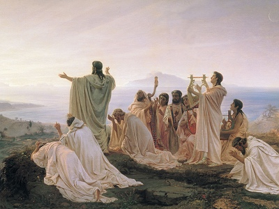

|

Pythagoreans celebrate sunrise, by Fyodor Bronnikov [19th cent.] (Public domain image) |
Numbers, Their Occult Power and Mystic Virtuesby W. Wynn Westcott[1911] |
This is a review of number lore by W. Wynn Westcott, an esoteric author of the 19th century. Westcott includes information on the Pythagoreans and the Kabbalah. The main portion of this book includes a series of chapters dealing with every-larger numbers, starting with the 'monad,' 1. Westcott had a grasp a wide range of occult correspondences, and this short book includes many rare snippets of information.
Title Page
Contents
Preface to the First Edition, 1890
Preface to the Second Edition, 1902
Part I. Pythagoras, his Tenets and his Followers
Part II. Pythagorean Views on Numbers
Part III. The Kabalah On Numbers
Part IV. The Individual Numerals
The Monad. 1.The Dyad. 2.
The Triad. 3.
Three and A Half, 3½
The Tetrad. 4.
The Pentad. 5
The Hexad. 6.
The Heptad. 7.
The Ogdoad. 8.
The Ennead. 9.
The Decad. 10.
Eleven. 11.
Twelve. 12.
Thirteen. 13.
Some Hindoo Uses Of Numbers
Other Higher Numbers
The Apocalyptic Numbers